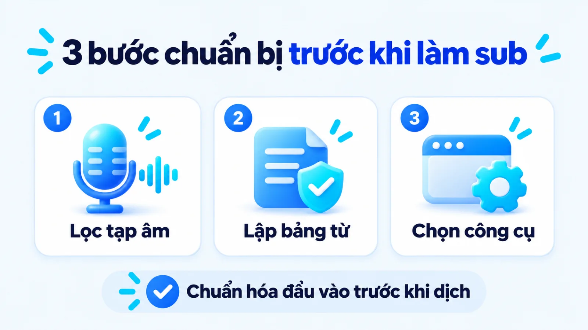
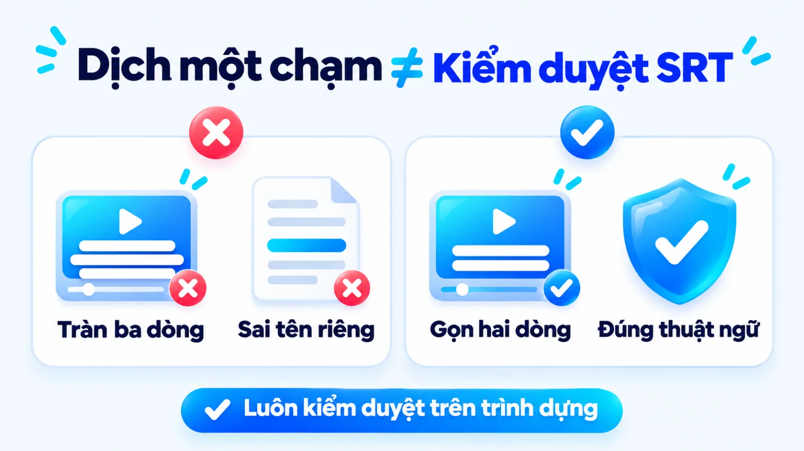
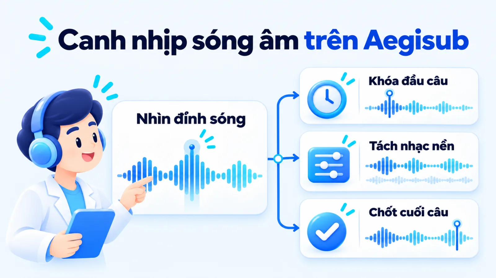
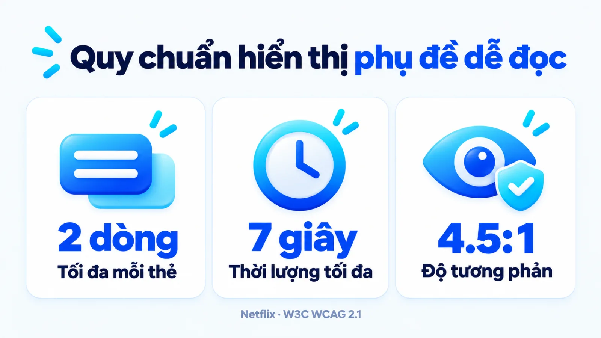
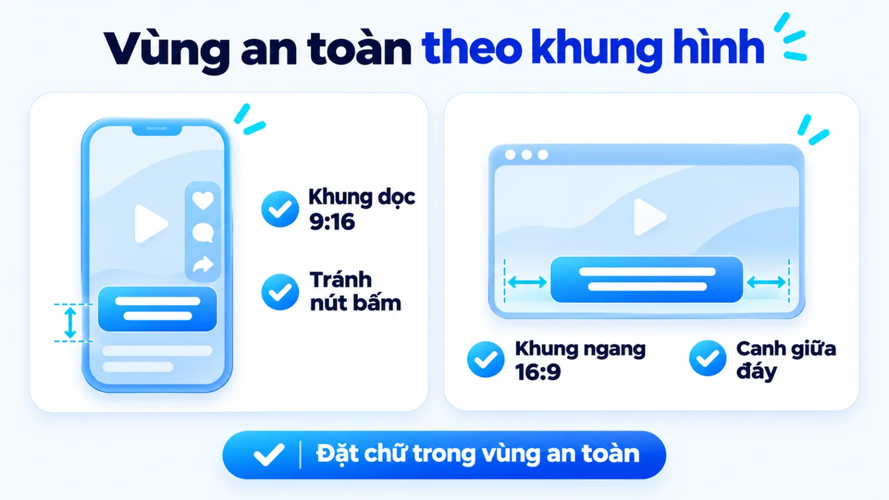
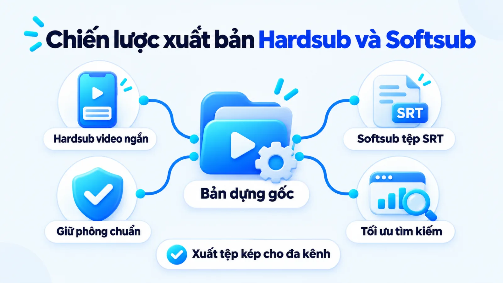

Cách làm video vietsub bằng AI chuẩn hiển thị
Cách làm video vietsub là quy trình chuyển đổi lời thoại gốc hoặc dịch thuật ngôn ngữ khác sang phụ đề tiếng Việt đồng bộ theo mốc thời gian và chuẩn hóa hiển thị trên khung hình video. Khi triển khai nội dung đa kênh, nhiều đội ngũ phụ thuộc hoàn toàn vào nút tạo phụ đề tự động một chạm khiến tên thương hiệu bị nhận diện sai, thuật ngữ chuyên ngành dịch lệch nghĩa hoặc chữ bị giao diện nền tảng che khuất. Để phụ đề thực sự giữ chân người xem ở chế độ tắt tiếng và hỗ trợ tìm kiếm, doanh nghiệp cần kết hợp tốc độ tách lời của công nghệ trí tuệ nhân tạo với quy chuẩn biên tập của con người. Tôi là Lê Tuấn Việt, Marketing Leader tại TAKI Group. Trong bài viết này, tôi phân tích tiêu chí chọn phương thức sản xuất theo nguồn lực, quy trình thực hiện trên công cụ AI lẫn phần mềm Aegisub và nguyên tắc kiểm duyệt trước khi xuất bản.
- Đăng ngày
- Cập nhật
Tóm tắt nhanh
- Chọn phương thức làm phụ đề theo mục tiêu: dùng AI tự động cho video ngắn hằng ngày, dịch tệp .SRT qua mô hình ngôn ngữ lớn cho video chuyên môn và canh sóng âm Aegisub cho video quảng cáo trọng điểm.
- Chuẩn bị tệp âm thanh đã lọc tạp âm cùng bảng thuật ngữ thương hiệu trước khi đưa vào công cụ giúp giảm đáng kể thời gian sửa lỗi nhận diện giọng nói.
- Mỗi thẻ phụ đề chỉ nên hiển thị tối đa 2 dòng trong không quá 7 giây với độ tương phản tối thiểu 4.5:1 và đặt trong vùng an toàn của từng khung hình.
- Xuất bản song song tệp .SRT mã hóa UTF-8 cho YouTube, website để phục vụ Video SEO và bản gắn cứng Hardsub cho TikTok, Reels để giữ nguyên nhận diện thương hiệu.
Mục lục bài viết8 phần
Cách làm video vietsub là gì và cần chuẩn bị gì
Cách làm video vietsub là quy trình chuyển lời thoại gốc hoặc dịch ngôn ngữ nước ngoài sang phụ đề video tiếng Việt, đồng bộ chính xác với mốc thời gian âm thanh và chuẩn hóa hiển thị trên khung hình. Để triển khai hiệu quả, đội ngũ cần chuẩn bị trước tệp âm thanh sạch tạp âm cùng bảng thuật ngữ thương hiệu thống nhất.
Trong hoạt động tiếp thị đa kênh, nhiều người dùng lướt bảng tin ở môi trường công cộng thường tắt âm thanh thiết bị. Phụ đề lúc này đóng vai trò giữ nhịp thông điệp trong những giây đầu tiên và giúp người xem nắm trọn luận điểm mà không cần bật tiếng. Tuy nhiên, nếu chỉ bấm nút nhận diện tự động mà bỏ qua bước chuẩn bị đầu vào, người dựng sẽ mất nhiều thời gian sửa từng lỗi chính tả và tên sản phẩm.

Trước khi mở bất kỳ phần mềm biên tập nào, người phụ trách nội dung cần hoàn tất hai điều kiện đầu vào. Thứ nhất là tách hoặc lọc tiếng ồn nền khỏi rãnh âm thanh gốc để mô hình nhận diện giọng nói không chép nhầm tiếng nhạc thành chữ. Thứ hai là lập bảng quy chuẩn từ vựng gồm tên thương hiệu, mã sản phẩm và các thuật ngữ chuyên ngành không được dịch sát nghĩa sang tiếng Việt.
Ba phương thức tạo phụ đề video tiếng Việt phổ biến
Dựa trên mức độ tự động hóa bằng công nghệ nhận diện giọng nói (Speech-to-Text, viết tắt là STT), khả năng kiểm soát ngữ cảnh dịch thuật và độ chính xác khi canh nhịp hình ảnh, hoạt động làm video vietsub hiện nay được chia thành ba phương thức thực thi chính dưới đây:
- Tạo phụ đề tự động trực tiếp trên trình dựng (Auto Captions): Công cụ dùng mô hình nhận diện giọng nói để tách lời thoại và chèn thẳng chữ lên trục thời gian video. Cách này nhanh nhưng khả năng hiểu ngữ cảnh chuyên ngành hẹp khi dịch trực tiếp còn hạn chế.
- Tách tệp phụ đề thô kết hợp dịch qua mô hình ngôn ngữ lớn (Large Language Model, viết tắt là LLM): Người làm xuất tệp văn bản có mốc thời gian như SubRip (viết tắt là .SRT), đưa vào LLM kèm bảng thuật ngữ để dịch chuẩn giọng thương hiệu, sau đó nạp lại vào phần mềm dựng.
- Canh nhịp sóng âm thủ công trên phần mềm chuyên dụng: Biên tập viên mở tệp âm thanh trên phần mềm mã nguồn mở như Aegisub, nhìn trực tiếp biểu đồ sóng âm để cắt từng mốc mili-giây và định dạng kiểu chữ chi tiết.
Bảng chọn công cụ theo nguồn lực đội ngũ marketing
Không có một công cụ duy nhất tối ưu cho mọi định dạng video trong doanh nghiệp. Tôi ưu tiên phân bổ phương thức sản xuất theo mức độ rủi ro thương hiệu và quỹ thời gian của nhân sự thay vì áp một quy trình cứng nhắc cho cả video ngắn hằng ngày lẫn phim quảng cáo trọng điểm.
Bảng dưới đây đối chiếu ba phương thức làm phụ đề theo bối cảnh sử dụng và sự đánh đổi nguồn lực để người phụ trách marketing ra quyết định phù hợp:
| Phương thức | Phù hợp khi | Đánh đổi cần lưu ý |
|---|---|---|
| AI tự động CapCut | Làm video ngắn TikTok, Reels hằng ngày, lời thoại tiếng Việt rõ, ít thuật ngữ khó | Dễ sai tên riêng thương hiệu, ngắt dòng theo nhịp thở máy móc và phụ thuộc gói cước |
| Tách SRT dịch qua LLM | Bản địa hóa video dài, hội thảo hoặc bài giảng cần giữ chuẩn thuật ngữ chuyên ngành | Thêm thao tác xuất nhập tệp trung gian, cần câu lệnh khóa chặt cấu trúc mốc thời gian |
| Thủ công trên Aegisub | Sản xuất TVC quảng cáo, video ra mắt sản phẩm hoặc cảnh nhiều người nói chồng lấp | Tốn thời gian canh sóng âm thủ công, đòi hỏi nhân sự nắm vững thao tác phần mềm |
Lưu ý khi áp dụng bảng chọn: thời gian xử lý thực tế phụ thuộc vào chất lượng thu âm ban đầu và độ quen tay của biên tập viên. Khi thiết kế luồng công việc có AI cho phòng nội dung, các SME (doanh nghiệp vừa và nhỏ) thường kết hợp phương thức thứ hai cho video kiến thức và phương thức thứ nhất cho chuỗi video ngắn vệ tinh.
Cách làm video vietsub tự động bằng công nghệ AI
Cách làm video vietsub tự động bằng công nghệ AI cho doanh nghiệp gồm ba bước liên hoàn: chuẩn hóa âm thanh để tách tệp phụ đề thô có mốc thời gian, dịch và hiệu đính qua mô hình ngôn ngữ lớn kèm bảng thuật ngữ, rồi nạp lại vào trình dựng để canh nhịp hiển thị.
Nhiều đội ngũ nhầm lẫn giữa việc bấm nút dịch tự động trên ứng dụng với việc vận hành một quy trình làm phụ đề có kiểm soát. Theo báo cáo kỹ thuật năm 2022 của OpenAI trên tập dữ liệu toàn cầu, hệ thống nhận diện giọng nói tự động (ASR) Whisper được huấn luyện từ 680.000 giờ âm thanh thu thập trên web, với khoảng một phần ba dữ liệu thuộc các ngôn ngữ ngoài tiếng Anh.
Quy mô dữ liệu huấn luyện lớn giúp công cụ chép lời thoại rất nhanh, nhưng máy không thể tự biết quy ước viết hoa tên sản phẩm hay sắc thái thuật ngữ riêng của từng ngành hàng. Vì vậy, con người vẫn phải giữ vai trò định hướng ngữ cảnh ở bước dịch và kiểm duyệt đầu ra.
Bước 1: Chuẩn hóa âm thanh và nhận diện giọng nói
Đưa video hoặc tệp âm thanh đã tách nhạc nền vào công cụ nhận diện giọng nói (như tính năng Auto Captions trên CapCut hoặc trình tạo phụ đề tích hợp mô hình Whisper), chọn đúng ngôn ngữ gốc trong video và xuất ra tệp phụ đề thô định dạng .SRT lưu trên máy tính.
Đầu ra: Tệp văn bản .SRT gốc chứa số thứ tự câu, mốc thời gian bắt đầu, kết thúc và lời thoại thô khớp với nhịp nói trong video.
Điểm các đội thực thi hay vướng ở bước này là bật đồng thời tính năng nhận diện và dịch tự động ngay trong trình dựng video. Khi máy vừa đoán âm thanh vừa dịch sang tiếng Việt trong một bước, lỗi nghe nhầm từ đồng âm sẽ biến thành câu dịch vô nghĩa mà người dựng rất khó truy ngược lại nguyên gốc.
Bước 2: Dịch tệp SRT bằng LLM giữ giọng thương hiệu
Mở tệp .SRT gốc bằng trình soạn thảo văn bản, sao chép từng phân đoạn lời thoại đưa vào mô hình ngôn ngữ lớn (LLM) kèm theo bảng thuật ngữ thương hiệu và yêu cầu dịch sang tiếng Việt tự nhiên nhưng giữ nguyên tuyệt đối số thứ tự cùng mốc thời gian.
Đầu ra: Bản dịch tiếng Việt định dạng .SRT đã chuẩn hóa thuật ngữ chuyên ngành, câu văn gọn và không làm xê dịch mã thời gian gốc.
Trong hệ thống AI Marketing phục vụ sản xuất nội dung đa phương tiện, việc tách riêng khâu dịch ra khỏi trình cắt ghép video giúp người phụ trách dễ dàng kiểm soát chất lượng câu chữ. Nếu doanh nghiệp đang phân vân giữa việc dùng công cụ trò chuyện đơn lẻ hay thiết lập tác nhân tự động hóa chuỗi bước này, việc phân biệt tác nhân AI và chatbot sẽ giúp chọn đúng cấu hình kỹ thuật theo quy mô sản lượng.
Bước 3: Canh nhịp hiển thị trên CapCut và nghiệm thu
Nhập tệp .SRT tiếng Việt đã duyệt vào trình dựng video như CapCut trên máy tính, áp mẫu kiểu chữ (template) của thương hiệu, rà soát lại các câu bị tràn dòng trên màn hình xem trước và xuất tệp video hoàn chỉnh.
Đầu ra: Video thành phẩm có phụ đề tiếng Việt khớp khẩu hình, ngắt dòng đúng cụm nghĩa và không bị che khuất thông tin chính.

Lưu ý về công cụ: tính đến tháng 11/2026, chính sách gói cước và hạn mức sử dụng tính năng tạo phụ đề tự động trả phí (Pro) hoặc xuất tệp .SRT rời trên CapCut thay đổi theo từng bản cập nhật phần mềm và khu vực tài khoản, không công bố một hạn mức miễn phí cố định dài hạn trên tài liệu kỹ thuật. Đội ngũ nên kiểm tra trực tiếp biểu tượng gói cước ngay trên giao diện phần mềm trước khi đưa vào quy trình sản xuất hàng loạt.
Cách làm vietsub thủ công với Aegisub chuẩn nhịp
Cách làm vietsub thủ công với Aegisub là phương pháp sử dụng phần mềm mã nguồn mở chuyên dụng để căn chỉnh chính xác từng mili-giây điểm vào và điểm ra của lời thoại dựa trên biểu đồ sóng âm. Quy trình này gồm hai bước chính từ đồng bộ âm thanh đến định dạng và xuất tệp.
Vậy khi đã có AI nhận diện giọng nói trong vài chục giây, tại sao đội ngũ marketing vẫn cần biết dùng Aegisub? Thực tế sản xuất cho thấy khi video có nhạc nền dồn dập, hiệu ứng âm thanh đè lên giọng đọc hoặc hai nhân vật đối thoại chồng lấp, bộ tách lời tự động thường gộp hai câu làm một hoặc đặt mốc xuất hiện trễ hơn khẩu hình. Với các video quảng cáo ngân sách lớn, sự lệch nhịp nửa giây cũng đủ làm giảm cảm giác chuyên nghiệp của thương hiệu.

Bước 1: Nạp video và đồng bộ sóng âm Waveform
Khởi động phần mềm Aegisub, mở tệp video cùng rãnh âm thanh đi kèm, chuyển khung nhìn âm thanh sang chế độ biểu đồ sóng âm (Waveform) để quan sát các đỉnh sóng giọng nói rồi kéo thanh giới hạn đỏ và xanh khớp chính xác điểm bắt đầu, kết thúc của từng câu thoại.
Đầu ra: Danh sách các dòng thời gian trống hoặc bản nháp đã được khóa chặt mốc vào ra theo đúng nhịp ngắt nghỉ thực tế của người nói.
Theo tài liệu hướng dẫn kỹ thuật của Aegisub Project, phần mềm hỗ trợ cả hai chế độ hiển thị âm thanh là biểu đồ sóng âm (waveform) và phổ tần số (spectrum) để biên tập viên canh thời gian lời thoại. Ở những đoạn có tiếng ồn môi trường dày, việc chuyển sang chế độ phổ tần số giúp mắt người phân biệt rõ dải tần giọng nói với tạp âm nền mà không cần nghe đi nghe lại nhiều lần.
Bước 2: Gõ lời dịch, định dạng ASS và xuất tệp
Nhập nội dung phụ đề tiếng Việt vào ô soạn thảo cho từng mốc sóng âm, mở trình quản lý kiểu dáng (Styles Manager) để thiết lập phông chữ, kích thước, viền chữ trên định dạng gốc, sau đó vào mục File chọn Export để xuất ra tệp .SRT với bảng mã UTF-8.
Đầu ra: Tệp phụ đề .ASS giữ nguyên thiết kế đồ họa hoặc tệp văn bản thuần .SRT chuẩn mã hóa UTF-8 sẵn sàng tải lên nền tảng phân phối.
Tài liệu xuất tệp của Aegisub Manual nêu rõ định dạng làm việc mặc định của phần mềm là Advanced SubStation Alpha (viết tắt là .ASS) nhằm bảo toàn kiểu dáng trình bày; để lưu sang định dạng văn bản thuần như .SRT, người dùng bắt buộc qua tính năng Xuất tệp (File chọn Export). Để tiết kiệm công sức, tôi khuyến nghị dùng AI tạo tệp .SRT nháp trước rồi mở trong Aegisub để tinh chỉnh các đỉnh sóng âm bị lệch.
Quy chuẩn tối ưu định dạng phụ đề theo khung hình
Quy chuẩn tối ưu định dạng phụ đề đòi hỏi mỗi thẻ chữ hiển thị trên màn hình không vượt quá 2 dòng, thời lượng xuất hiện tối đa 7 giây và tỷ lệ tương phản màu chữ so với nền đạt tối thiểu 4.5:1. Đồng thời, khung chữ phải nằm trọn trong vùng an toàn của từng tỷ lệ khung hình dọc hoặc ngang.
Một bản dịch đúng ngữ pháp nhưng đặt chữ quá nhỏ, màu chữ chìm vào phông nền sáng hoặc nhảy dòng liên tục theo từng từ đơn lẻ vẫn làm người xem mỏi mắt và lướt qua video. Tối ưu hiển thị là bước biến văn bản dịch thành trải nghiệm thị giác hỗ trợ trực tiếp cho tỷ lệ giữ chân người xem.
Thông số số dòng, thời lượng và độ tương phản
Trong tài liệu quy chuẩn kỹ thuật Timed Text Style Guide áp dụng toàn cầu, Netflix quy định mỗi thẻ phụ đề chỉ được phép có tối đa 2 dòng văn bản và thời lượng hiển thị tối đa cho một thẻ đơn lẻ là 7 giây. Đồng thời, người biên tập cần kiểm soát mật độ ký tự trên mỗi dòng và tốc độ đọc ký tự mỗi giây (Characters Per Second, viết tắt là CPS) ở ngưỡng vừa mắt để người xem kịp thu nhận thông tin trước khi chuyển cảnh.
Về khả năng nhìn rõ chữ trên màn hình di động, tiêu chuẩn tiếp cận nội dung số WCAG 2.1 mức AA công bố năm 2018 của World Wide Web Consortium (W3C) xác định văn bản thông thường và hình ảnh chứa chữ phải đạt tỷ lệ tương phản tối thiểu 4.5:1 so với nền phía sau. Vì hậu cảnh video chuyển động liên tục, cách an toàn nhất là dùng chữ màu sáng kết hợp viền chữ đen vừa phải hoặc đặt trên dải hộp nền bán trong suốt.

Vùng an toàn cho video dọc 9:16 và video ngang 16:9
Khi cùng một nội dung được cắt ra nhiều phiên bản cho YouTube, website và TikTok, vị trí đặt phụ đề không thể giữ cố định một tọa độ. Trên giao diện video ngắn dọc 9:16, phần đáy màn hình chứa tên tài khoản, dòng mô tả bài đăng, tên nhạc nền và nút kêu gọi hành động, trong khi cạnh phải chứa cột biểu tượng thả tim, bình luận và chia sẻ.
Bảng dưới đây tổng hợp quy chuẩn định dạng và vùng an toàn giữa hai tỷ lệ khung hình phổ biến để đội ngũ dựng video thiết lập mẫu cố định:
| Tiêu chí hiển thị | Khung dọc 9:16 (TikTok, Reels) | Khung ngang 16:9 (YouTube, Web) |
|---|---|---|
| Số dòng mỗi thẻ | Tối đa 2 dòng, ưu tiên 1 đến 2 cụm ngắn gọn cho mỗi nhịp nói nhanh | Tối đa 2 dòng theo chuẩn Netflix, giữ nhịp ngắt câu trọn vẹn ý |
| Thời lượng và độ tương phản | Tối đa 7 giây mỗi thẻ, tỷ lệ tương phản chữ và nền tối thiểu 4.5:1 | Tối đa 7 giây mỗi thẻ, tỷ lệ tương phản tối thiểu 4.5:1 kèm viền mảnh |
| Vùng an toàn đặt chữ | Đẩy cao khỏi đáy màn hình, chừa lề phải tránh cột nút tương tác | Đặt ở vùng một phần ba dưới, căn giữa và cách lề đáy khoảng 10% |
| Cách ngắt cụm tiếng Việt | Không tách rời tên thương hiệu hoặc từ ghép tiếng Việt sang 2 dòng | Ngắt tại dấu câu hoặc liên từ, giữ độ dài hai dòng cân đối nhau |
Điều kiện đọc bảng: kích thước vùng bị che khuất trên TikTok hoặc Facebook Reels có thể thay đổi tùy theo độ dài văn bản mô tả và nhãn quảng cáo tại thời điểm phân phối (thông số pixel cố định chưa được xác nhận đồng nhất cho mọi vị trí hiển thị). Người dựng luôn phải bật lớp lưới kiểm tra trước khi xuất tệp và có thể kết hợp thêm cơ chế cá nhân hóa nội dung bằng AI cho từng nhóm khán giả.
Phụ đề Hardsub và Softsub trong tối ưu Video SEO
Phụ đề gắn cứng (Hardsub) và phụ đề rời (Softsub) khác nhau cốt lõi ở cơ chế lưu trữ dữ liệu: Hardsub đốt trực tiếp chữ thành điểm ảnh trên video nên giữ nguyên thiết kế nhưng máy tìm kiếm không đọc được văn bản, còn Softsub tồn tại dưới dạng tệp thời gian độc lập giúp công cụ tìm kiếm lập chỉ mục phục vụ tối ưu hóa công cụ tìm kiếm cho video (Video SEO).
Theo tài liệu hướng dẫn tối ưu hóa tìm kiếm video hiện hành của Google Search Central, bộ máy tìm kiếm Google có thể sử dụng phần văn bản trong bản chép lời (transcript) hoặc tệp phụ đề đóng (closed captions) để hiểu rõ hơn nội dung và ngữ cảnh của video đó. Nếu doanh nghiệp chỉ đăng một tệp video đã gắn cứng chữ lên website hoặc YouTube mà không kèm tệp phụ đề rời, hệ thống thu thập dữ liệu sẽ thiếu lớp văn bản xác thực từng mốc thời gian bên trong video.

Ngược lại, khi tải tệp phụ đề rời lên nền tảng phân phối, người làm kỹ thuật cần tuân thủ quy định mã hóa của từng hệ thống. Tài liệu trợ giúp hiện hành của YouTube Help (Google) xác nhận rằng với định dạng SubRip (.SRT), nền tảng chỉ hỗ trợ phiên bản văn bản cơ bản, không nhận diện các thẻ kiểu chữ phức tạp và tệp bắt buộc lưu ở bảng mã văn bản thuần UTF-8 để tránh lỗi hiển thị mã thẻ hoặc vỡ dấu tiếng Việt.
Để chọn đúng định dạng xuất tệp cho từng kênh truyền thông, đội ngũ marketing có thể đối chiếu theo bốn tiêu chí kỹ thuật và phân phối trong bảng dưới đây:
| Tiêu chí đối chiếu | Phụ đề gắn cứng (Hardsub) | Phụ đề rời (Softsub / .SRT) |
|---|---|---|
| Cơ chế lưu trữ và hiển thị | Kết xuất cố định thành điểm ảnh trên khung hình, không thể tắt mở | Tệp văn bản chứa mốc thời gian độc lập, người xem tự bật tắt được |
| Khả năng hỗ trợ Video SEO | Không cung cấp luồng văn bản riêng cho bọ tìm kiếm thu thập dữ liệu | Cung cấp văn bản rõ ràng giúp Google và YouTube hiểu ngữ cảnh video |
| Kiểu dáng và nhận diện | Giữ nguyên 100% phông chữ, màu sắc, hiệu ứng của thương hiệu | Phụ thuộc trình phát của nền tảng, định dạng .SRT trên YouTube bỏ thẻ kiểu |
| Kênh phân phối phù hợp | TikTok, Facebook Reels, Instagram, video chạy quảng cáo chuyển đổi | YouTube, video nhúng trên trang đích website, khóa học đa ngôn ngữ |
Giới hạn áp dụng: việc tải tệp .SRT chuẩn UTF-8 giúp công cụ tìm kiếm hiểu nội dung video chính xác hơn, nhưng thứ hạng thực tế còn phụ thuộc vào chất lượng trang đích, tiêu đề và tín hiệu tương tác tổng thể. Khi doanh nghiệp thiết kế website chuẩn chuyển đổi và nhúng video giới thiệu sản phẩm lên trang dịch vụ, giải pháp tối ưu là xuất tệp kép: dùng bản có tệp .SRT rời cho trình phát trên web và YouTube, đồng thời xuất bản Hardsub cho các kênh mạng xã hội video ngắn.
Bốn lỗi nhận diện giọng nói AI và bước kiểm duyệt
Bốn lỗi phổ biến nhất khi dùng AI làm phụ đề video marketing gồm: nhận diện sai tên riêng thương hiệu, dịch sát nghĩa làm lệch thuật ngữ chuyên ngành, ngắt dòng ngược nhịp nói và tự ý lấy video hoặc phụ đề bên ngoài gây rủi ro bản quyền thương mại. Doanh nghiệp cần đặt điểm kiểm duyệt của con người trước khi xuất bản.
Công nghệ nhận diện giọng nói giúp rút ngắn đáng kể thao tác gõ chữ thô, nhưng nếu giao phó hoàn toàn cho máy mà thiếu vai trò người kiểm duyệt, một lỗi sai chữ trên màn hình có thể làm hỏng uy tín chuyên môn của cả chiến dịch. Dưới đây là bốn nhóm lỗi điển hình cần rà soát kỹ trong quy trình sản xuất:
- Biến dạng tên riêng và thương hiệu: Mô hình tách âm thanh thường phiên âm sai tên thương hiệu nước ngoài hoặc mã sản phẩm thành những cụm từ tiếng Việt đồng âm vô nghĩa, làm giảm độ tin cậy ngay từ vài giây mở đầu của video.
- Dịch sát nghĩa lệch thuật ngữ ngành: Khi dịch tự động thiếu ngữ cảnh, công cụ dễ mắc hiện tượng ảo giác AI hoặc dịch ghép từng từ khiến các khái niệm tiếp thị, kỹ thuật và tài chính bị sai lệch bản chất chuyên môn của ngành hàng.
- Ngắt dòng đứt cụm ngữ nghĩa: Thuật toán tự động thường cắt dòng dựa trên số lượng ký tự hoặc khoảng lặng ngắn của hơi thở, làm tách đôi một từ ghép tiếng Việt hoặc đặt dấu câu sai vị trí trên khung hình.
- Rủi ro bản quyền video và phụ đề: Việc tải lại video của nhà sáng tạo khác hoặc lấy tệp phụ đề từ các kho cộng đồng chưa được cấp phép để gắn logo doanh nghiệp chạy quảng cáo có thể dẫn tới đánh gậy bản quyền và khóa tài khoản.
Đối chiếu xử lý lỗi thuật ngữ, ngắt câu và bản quyền
Để hình dung rõ sự khác biệt giữa việc xuất bản thẳng kết quả thô của máy và quy trình có biên tập viên kiểm soát, hãy xem một tình huống ví dụ biên tập, không phải kết quả khách hàng thật: một doanh nghiệp cung cấp phần mềm quản trị B2B sản xuất chuỗi video ngắn giải thích tính năng tự động hóa báo cáo cho nhóm khách hàng tổ chức.
Ví dụ biên tập, không phải kết quả khách hàng thật
Đối chiếu bản phụ đề AI tự động thô và bản đã qua biên tập viên chuẩn hóa
Trong video giới thiệu giải pháp (ví dụ biên tập), người nói phát âm nhanh câu chứa thuật ngữ chuyên ngành. Ở cách làm sai, nhân sự bấm tạo phụ đề một chạm rồi xuất thẳng tệp khiến chữ "dữ / liệu" bị cắt làm hai dòng và tràn xuống nút mua hàng. Ở cách làm đúng, biên tập viên đối chiếu bảng thuật ngữ, rút gọn câu thành "Tự động gom dữ liệu báo cáo về một bảng điều khiển", khóa tối đa 2 dòng và đẩy chữ lên vùng an toàn.
Về khía cạnh pháp lý, các kho lưu trữ phụ đề phim ảnh trên mạng chỉ phù hợp để tham khảo cách dịch câu giao tiếp đời thường. Đội ngũ marketing tuyệt đối không lấy nguyên tệp phụ đề hoặc cắt ghép video chưa có quyền sử dụng thương mại để làm nội dung bán hàng. Chi phí sửa chữa khủng hoảng bản quyền luôn lớn hơn nhiều so với thời gian tự thu âm và tạo tệp phụ đề gốc. Có công cụ chưa phải là có quy trình.

Checklist nghiệm thu và khung đo hiệu quả giữ chân
Trước khi bàn giao video cho bộ phận phân phối hoặc chạy quảng cáo, người phụ trách nội dung cần kiểm tra lần cuối theo năm tiêu chí nghiệm thu bắt buộc dưới đây:
- Chính tả và tên riêng: Đã rà soát 100% tên thương hiệu, tên sản phẩm, chức danh nhân vật và các con số cam kết xuất hiện trên phụ đề.
- Quy chuẩn dòng và thời lượng: Không có thẻ phụ đề nào vượt quá 2 dòng hoặc neo trên màn hình quá 7 giây gây mỏi mắt người xem.
- Độ tương phản và vùng an toàn: Màu chữ đạt độ tương phản tối thiểu 4.5:1 có viền hoặc nền đỡ, không bị giao diện dọc 9:16 hay ngang 16:9 che khuất.
- Định dạng tệp xuất bản: Đã xuất đúng bản Hardsub cho mạng xã hội video ngắn và bản .SRT mã hóa thuần UTF-8 cho YouTube hoặc website.
- Bản quyền tài nguyên: Âm thanh gốc, hình ảnh, phông chữ tiếng Việt và bản dịch phụ đề đều thuộc quyền sử dụng hợp lệ của doanh nghiệp.
Sau khi đăng tải, hiệu quả chuẩn hóa phụ đề cần được đặt trong bản kế hoạch marketing tổng thể và theo dõi qua ba tầng chỉ số: tầng 1 là tín hiệu giữ chân đầu phễu (tỷ lệ xem qua 3 giây đầu khi tắt tiếng); tầng 2 là hành vi xem đạt chuẩn (thời lượng xem trung bình và tỷ lệ xem hết); tầng 3 là hành động chuyển đổi như nhấp vào trang đích hoặc gửi yêu cầu tư vấn.
Khi đọc báo cáo, người làm marketing cần lưu ý giới hạn quy kết của dữ liệu. Phụ đề chuẩn giúp giảm tỷ lệ thoát sớm do người dùng không bật âm thanh, nhưng kết quả chuyển đổi cuối cùng luôn phụ thuộc đồng thời vào sức hút của kịch bản, ưu đãi sản phẩm và tệp đối tượng phân phối.
Câu hỏi thường gặp về cách làm video vietsub
Khi nào doanh nghiệp không nên giao phụ đề cho AI?
Không nên giao phó hoàn toàn cho AI khi doanh nghiệp sản xuất video công bố thông tin pháp lý, y tế, tài chính hoặc TVC ra mắt sản phẩm chiến lược. Với nội dung có mật độ thuật ngữ kỹ thuật cao hoặc nhiều phương ngữ, AI chỉ nên dùng để tách mốc thời gian thô bước đầu, sau đó bắt buộc có biên tập viên dịch và rà soát thủ công trên Aegisub.
Làm phụ đề trên điện thoại có đủ chuẩn cho doanh nghiệp?
Có, nếu mục tiêu là sản xuất nhanh các video ngắn gắn cứng phụ đề (Hardsub) quay dựng tại chỗ cho TikTok hoặc Facebook Reels. Ngược lại, ứng dụng di động bộc lộ giới hạn khi doanh nghiệp cần xuất tệp .SRT rời chuẩn mã hóa cho Video SEO, đối chiếu bảng thuật ngữ dài hoặc canh sóng âm chi tiết ở môi trường nhiều tạp âm.
Nên dịch trực tiếp khi nghe hay xuất tệp văn bản trước?
Đội ngũ marketing nên xuất lời thoại gốc ra tệp phụ đề .SRT hoặc bản chép lời văn bản trước rồi mới tiến hành dịch sang tiếng Việt. Quy trình tách bước này giúp mô hình ngôn ngữ lớn hoặc biên tập viên nắm trọn ngữ cảnh toàn bài, giữ đồng nhất thuật ngữ xuyên suốt video và tránh lỗi dịch đứt quãng theo từng nhịp nghỉ ngắn.
Vì sao phụ đề tải lên YouTube bị lỗi phông chữ tiếng Việt?
Lỗi vỡ dấu hoặc hiển thị ký tự lạ trên YouTube xảy ra khi tệp .SRT được lưu ở bảng mã cũ như ANSI hoặc chứa thẻ định dạng kiểu chữ phức tạp từ phần mềm dựng. Để khắc phục, người biên tập cần mở tệp trên trình soạn thảo hoặc Aegisub và xuất lại định dạng .SRT ở bảng mã văn bản thuần UTF-8 theo quy chuẩn của YouTube.
Video chạy quảng cáo chuyển đổi nên dùng định dạng nào?
Video chạy quảng cáo chuyển đổi trên TikTok, Reels và Shorts nên dùng phụ đề gắn cứng (Hardsub) ngay trong khung hình để chữ hiển thị tức thì đúng phông thương hiệu. Khi dựng video khung hình dọc trên điện thoại, người làm video cần đẩy vị trí chữ lên trên vùng đáy màn hình nhằm tránh bị nút kêu gọi hành động và dòng mô tả quảng cáo che khuất.
Làm sao giữ thuật ngữ thương hiệu đồng nhất giữa nhiều video?
Doanh nghiệp cần xây dựng một bảng từ điển thuật ngữ chuẩn gồm từ gốc, nghĩa tiếng Việt đã duyệt và danh sách tên riêng sản phẩm cấm dịch tự động. Mỗi khi dịch tệp .SRT qua công cụ AI, biên tập viên đính kèm bảng quy chuẩn này vào câu lệnh đầu vào để hệ thống áp dụng thống nhất cho toàn bộ chuỗi video.
Kết luận
Chọn cách làm video vietsub bằng công nghệ AI tự động, dịch tệp .SRT qua mô hình ngôn ngữ lớn hay canh sóng âm thủ công trên Aegisub luôn bắt đầu từ mục tiêu sử dụng và độ phức tạp thuật ngữ của từng video, không bắt đầu từ việc chạy theo một công cụ duy nhất. Khi phụ đề tuân thủ giới hạn tối đa 2 dòng, đạt độ tương phản 4.5:1 trong vùng an toàn và phân tách rõ bản Hardsub với tệp .SRT chuẩn UTF-8, nội dung video vừa giữ chân được người xem tắt tiếng vừa hỗ trợ tốt cho Video SEO.
Ngay trong tuần này, bạn có thể lấy 3 video gần nhất của doanh nghiệp đang đăng trên TikTok và YouTube để kiểm tra nhanh: phụ đề có bị các nút giao diện che khuất không, các thuật ngữ ngành hàng có đồng nhất không và kênh YouTube đã được đính kèm tệp .SRT rời mã hóa UTF-8 hay chưa.
Khi số lượng video sản xuất tăng lên hàng chục bản mỗi tháng trên nhiều kênh mà đội ngũ liên tục tốn giờ sửa lỗi dịch thuật hoặc báo cáo lượt xem không nối được với chất lượng khách hàng tiềm năng, bài toán lúc này không còn nằm ở thao tác chỉnh từng dòng phụ đề mà cần một quy trình vận hành nội dung và đo lường đồng bộ.
Quy trình sản xuất video và ứng dụng AI tại doanh nghiệp của bạn đang tốn nhiều thời gian nhất ở khâu tách lời, dịch thuật ngữ hay kiểm duyệt đầu ra?